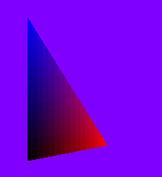
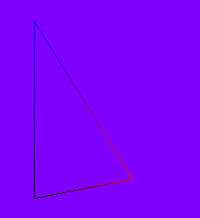
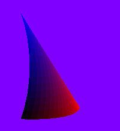
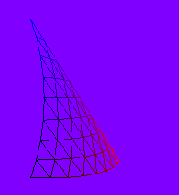
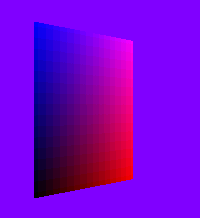
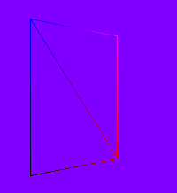
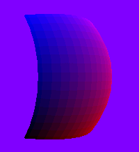
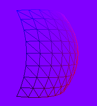
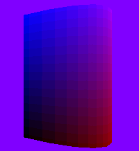
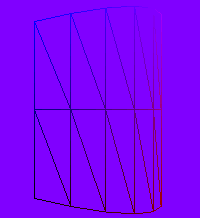

BezierSurface.h
Illustrates tessellation and drawing of Bezier surfaces. The images below show tessellation of a triangle patch.
|  |  |
|  |  |
The images below show tessellation of a rectangle patch.
|  |  |
|  |  |
The images below show tessellation of a cylinder patch.
|  |  |